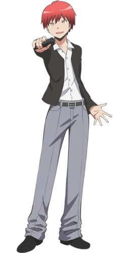

Karma Akabane (赤羽 Akabane Karuma) adalah siswa Kelas 3-E Korosensei SMP Kunugigaoka yang telah diskors dari sekolah karena perilaku kekerasannya dan salah satu teman terdekat Nagisa.
Karma terkenal di seluruh sekolah karena perilaku kekerasan dan sikapnya yang menyusahkan. Dia cukup licik, nakal, dan agak sadis, biasanya bermain curang, menipu, dan terkadang memanipulasi, mempermalukan, dan berkelahi dengan orang lain. Dia telah dijelaskan oleh Karasuma sebagai "pada pandangan pertama, dia terlihat sebagai orang yang malas, tapi ada rasa kenakalan yang kuat di matanya", dan Itona menggambarkan dia memiliki "visi tertentu" ke Terasaka.
Karma is quite relaxed most of the time as he occasionally skips out on things he finds boring, such as the school assembly. However, he has become considerably more hard working at studying after the embarrassing exam arc although he hides it by making it look like he was playing video games. Unexpectedly, Karma is a fan of superhero movies, like Sonic Ninja.
Terlepas dari sifatnya yang agak sadis, Karma sebenarnya memiliki nilai-nilai baik di balik motifnya, dan bisa sangat berempati. Alasan dia ditempatkan di Kelas E adalah karena dia telah menyelamatkan seorang senior dari Kelas E yang diintimidasi oleh siswa dari gedung utama. Dia, tidak seperti mantan teman sekelasnya, tidak berprasangka terhadap Kelas E. Dia percaya bahwa setiap dari mereka memiliki bakat khusus mereka sendiri dan akan membela mereka, terutama melawan Kelas A.
Ketika dia berada di gedung utama, karena pengkhianatan guru wali kelasnya yang paling tepercaya, Karma mulai membenci semua orang yang menyebut diri mereka 'guru' dan akibatnya, dia hampir tidak menghormati orang dewasa mana pun. Namun, Karma menjadi lebih objektif setelah bertemu Korosensei, sekarang lebih menghormati kekuatan dan kelemahan lawan dan gurunya.
Karma Akabane
Assassination Classroom
Biographical Information
Japanese
赤羽 業 カルマCharacteristics
Ulang Tahun 25 Desember
Jenis Kelamin Laki Laki
Tinggi 175 Cm
Berat Badan 60 kg
Golongan Darah AB
Warna Rambut Merah